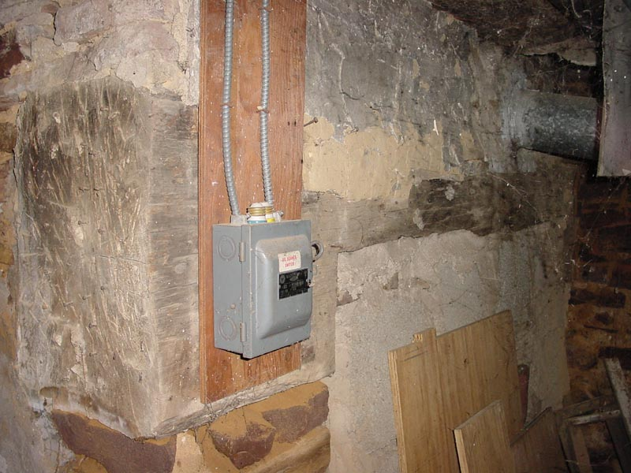

|  |
|
One of the most interesting aspects of the lesser hall is this enormous fireplace, which has since been sealed and is being used for venting the heater. In general the stonework of the lesser hall is older, and coupled with this large fireplace might indicated that this portion of the basement was the original house or cabin the larger farmhouse was built on. Note the large wooden beam, hose end is exposed. It shows natural axe cuts and is some 20 inches across. It is cut into being the supporting sash for the width of what must have been a 4 foot wide fireplace. Some indications in the ceiling show that after the house was expanded, this may have remained the kitchen for a period of time. |